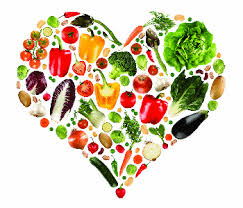

PREFER
When diet is wrong, medicine is of no use. When diet is right, medicine is of no need.
Do not eat less. Just eat right
When diet is wrong, medicine is of no use. When diet is right, medicine is of no need.
Do not eat less. Just eat right
| Multi grain flour |
| Fresh Vegetables/fruits |
| coconut water/soup/ vegetable juice/ lemon water/ green tea/ herbal tea |
| Ginger & garlic |
| Nuts, dry fruits and seeds (e.g. almond (7/day), walnut (1/day), pista (5/day), flax & melon seeds etc) |
| Boiled rice once a week (One bowl only) |
| Liberal salt intake (with low Sodium contents) |
| Mustard (Kachi ghani), Canola, Sunflower (high MUFA) & Olive oil – Oil 30 g/day only |
| Skimmed or double toned milk (~ 1 kg/day) & its products (Paneer, curd, lassi, milk shake, etc) |
| Sprouted pulses & Paneer |
| White part of the eggs only. Fish/sea food once a week |
| Drink minimum 12-14 glass of water (Purified) daily |
| Fresh cooked food. |
| Take soaked dry fruits along with morning green tea. |
| Take meal at regular intervals (2 hours). |
| Take light meal at night. |
| Salad should be 1/3rd part of your meal & take salad before each meal. |
| Eat dinner minimum 2.5 hours before you sleep. |
| Eat /drink slowly. Chew properly. |
| Walk 45-60 minutes a day (speed 6-8 km/h) or any other equivalent exercise. |
| Have sun bath 20 minutes/day. |
| Practice stretching exercises 20-30 minutes/day. |
| Sit straight. |
| Rest is best to heal the internal injuries. |
| Wear cotton cloths. Loose cloths. |
| Have 7-8 hour (for adult)sleep. |
| Maintain your body mass index according to height. Approximately 1” =1 kg. (For an adult men).For women, 7-10 % less than men. |
| Belly size should be less than chest/ breast size. |
| Use steel and glass utensils. Use small size spoon. |
| Happiness, love & peace of mind. |